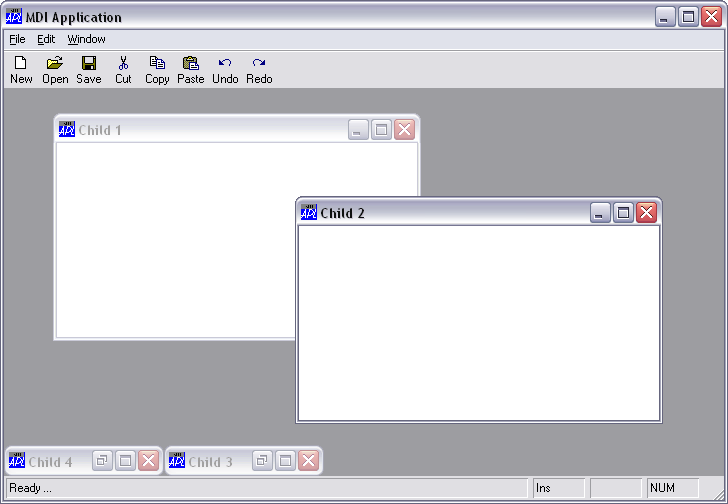

The multiple-document interface (MDI) is a document-oriented interface that is commonly used by word-processors, spreadsheets and other applications that deal with documents. An MDI application allows the user to display multiple documents at the same time, with each document displayed in its own window. Document windows are implemented as child forms that are contained within a parent form. When a child form is minimised, its icon appears on the parent form instead of on the desktop. An example MDI application is illustrated below.

Child forms displayed within an MDIClient
In general, the parent form in an MDI application may also contain tool bars and status bars and potentially other objects. This means that not all of the internal area of the parent form is available. To allow for this and to distinguish MDI behaviour from that of simple child forms, Dyalog APL/W uses an MDIClient object.
The MDIClient object is a container object that effectively specifies the client area within the parent Form in which the SubForms are displayed. The MDIClient object also imposes special MDI behaviour which is quite different from that where a SubForm is simply the child of another Form.
By default, the MDIClient occupies the entire client area within its parent Form. This is the area within the Form that is not occupied by ToolBars and StatusBars. In most applications it is therefore not necessary to specify its Posn and Size properties, although you may do so if you want to reserve additional space in the parent Form for other objects.